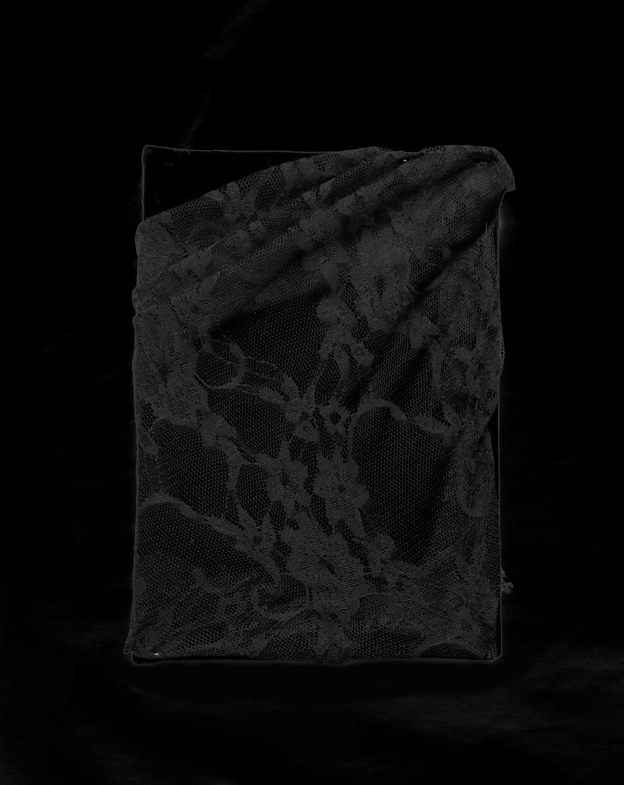
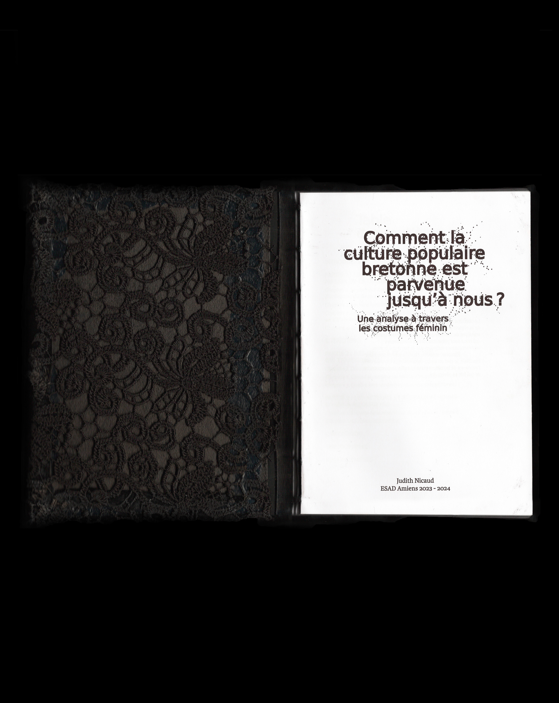
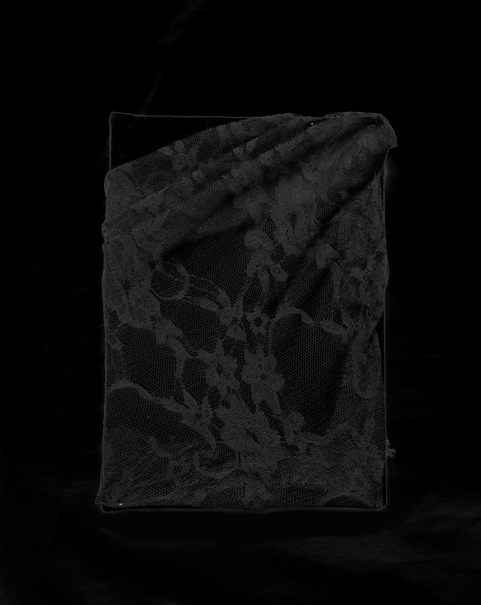
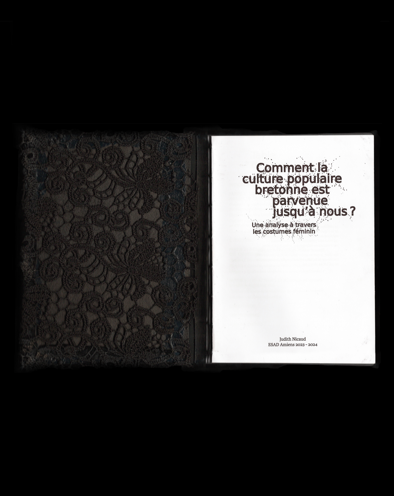

Ce mémoire explore la persistance de la culture bretonne à travers le costume féminin traditionnel, analysant son rôle comme vecteur d’identité,
son évolution et ses transgressions modernes. Une enquête met en lumière l’implication des femmes dans la préservation de cette tradition, avec une
attention particulière portée à un entretien avec Marie André Jegat. L’objet éditorial utilise des éléments esthétiques inspirés du costume breton.
L'édition finale fait 80 pages, est reliée en copte, la couverture est en velours recouvert de dentelle et de broderies upcyclées.→Accéder au PDF

 


